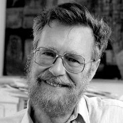

Dijkstrův
algoritmus
Postup
Větvení bodů
Edsger Dijkstra

Mezi Dijkstrovy nejznámější příspěvky informatice patří algoritmus pro nalezení nejkratší cesty v grafu, označovaný dnes jako Dijkstrův algoritmus, a idea semaforu, nástroje pro synchronizaci vícero procesorů a programů.
Po ukončení studia na vysoké škole a získání titulu v oboru fyziky začal se Dijkstra zabývat programováním.
V té době se ale setkal s problémem, jímž byl fakt, že programování se oficiálně ještě nepovažovalo za profesi. Z toho důvodu pokračoval v práci v Matematickém centru až do roku 1970.